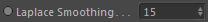
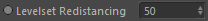

Parameters
Parameters
Volume
Takes the volume that shall be smoothed.
Laplace Smoothing

Amount of Laplacian Smoothing iterations. This results in the surface being pushed outward.
Experiments showed that lower values are enough to push the surface to a state that is advantageous for the following biharmonic smoothing.
Biharmonic Smoothing
Amount of Biharmonic Smoothing iterations. This results in the surface being pulled inward.
The default value of 250 is a good trade-off between quality and performance. Higher values are definetly possible but slow down the process (depending on Levelset Redistancing)
Gain
A strength multiplier.
Levelset Redistancing

Defines the iteration interval to perform the redistancing (see top of page) on the volume and therefore trying to keep details inbetween biharmonic smoothing iterations.
Higher values result in faster execution of the smoother but you trade quality for it. Lower values result in better quality but as redistancing is called more frequently it becomes slower.
The default value of 50 will perform redistancing every 50th Biharmonic Smoothing iteration.
Init
This is the value between the Min. and Max. Radii that is used to initialise the smoother with.
This should be approximately same as (or a little higher than) the particle radius used in the Surface reconstructor (if you are using the smoother on it).
Min. Radius
The minimum particle radius possible.
Max. Radius
The maximum particle radius possible.